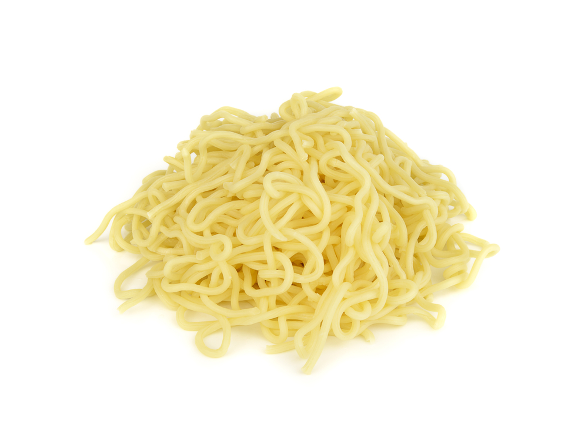

Noodles

This are noodles for when you are hungry.
I don't really like food.
ingredients
- Noodles; You know, pasta
- Water
- A pot
Steps
- Boil some water
- Put the pasta and wait until it is eatable
- There, noodles
Pro tip: you can use salt so it can have taste.